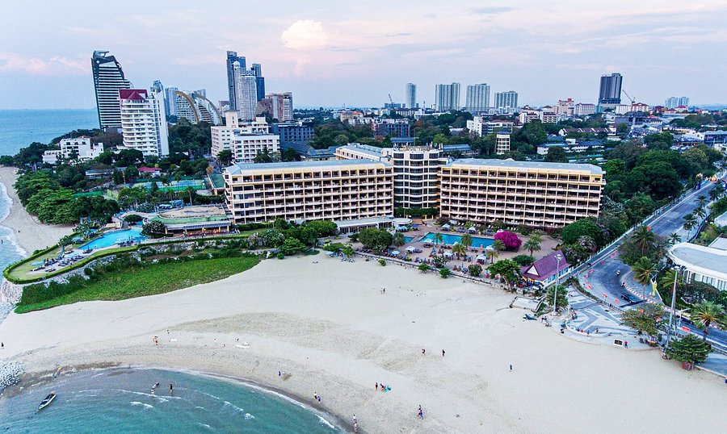
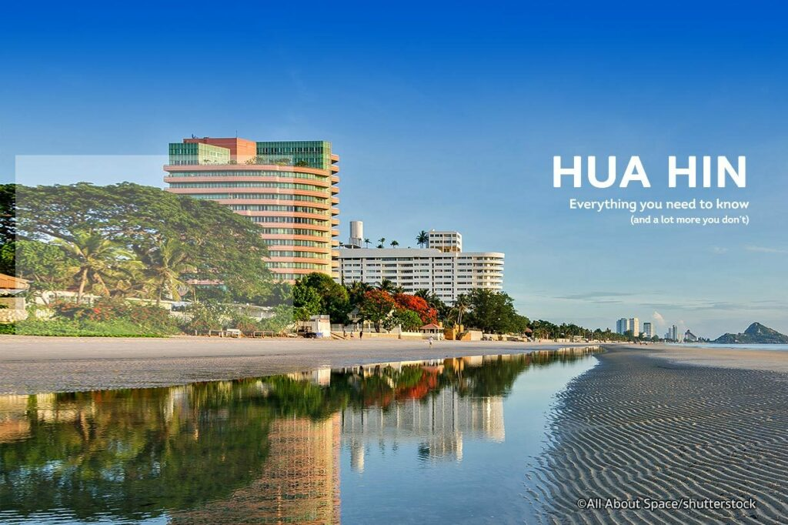

在COVID-19疫情期間泰國開放國門重振經濟，預估泰國的房地產行業大概能復甦多少？
近日，泰國知名房地產網站DDproperty針對外國遊客最喜歡去的五大城市曼谷，普吉，清邁，芭堤雅，華欣等地區發布了房地產市場最新統計報告。
首先「曼谷」先前被列為深紅色管制區域，導致2021年第三季度房價走勢較第二季度下降2%，經濟持續低迷，銷售量減緩。國外客戶購買力不足，而供應比率上升了7%，也反映吸收率沒有恢復到應有的水平。但與2021 年 8 月相比，9 月的購買比率增加了10%，反映出新冠病毒趨緩後都市的住房需求率開始慢慢恢復。加上開發商不斷推出有吸引力的促銷活動，租屋率也上升了 2%。
「普吉島」房價指數從2021年第二季度開始下降-22%，與Covid-19疫情期（2019年）相比，價格指數下降-6%，而供應指數下降-16% . 自從推出沙河計劃後持續有改善。因此2021年9月購房指數比8月增加了14%。租屋率也增加了29%。
「清邁」房價指數較2021年第二季趨於上漲1%。比較 2019年房價指數上漲9%，供應指數上漲15%，購房需求呈現積極跡象。9月份的購買指數增加11%。與8月份相比由於房價合理且具有成本效益，租金利息下降了11%，因此吸引消費者決定購買而不是租賃。
「芭提雅」房價指數走勢較2021年第二季下跌-7%，較2019年下跌-47%。由於市場供應指數增加52%，吸收率未恢復正常。房屋購買率的積極跡象2021年9月比8月增長22%，而租屋比率下降-25%。
最後，2021年第三季度的「華欣」房價指數走勢較2021年第二季度下降-24%，較2019年下降-64%。在前covid-19疫情期，供應指數下降-18%，因開發商放緩新項目的推出，而9月份的購屋指數上升了18%，租屋率下降了-38%。
針對政府以吸引100萬富裕外國顧客到泰國購買房產的政策案例，泰國消費者對外國人持有財產和土地所有權法新的草案意見調查，有26% 同意，24%的人不同意。
然而79%同意的人認為這將能推動泰國的房地產市場和整體泰國經濟的增長。 而62%不同意的人擔心泰國土地和房產價格會上漲，會影響到本國人購買房屋土地的能力。新的外國持有財產和土地所有權法草案的修正案，有利有弊，國家應評估研究各方面的影響，同時也要深入了解人民需求和建立信心。